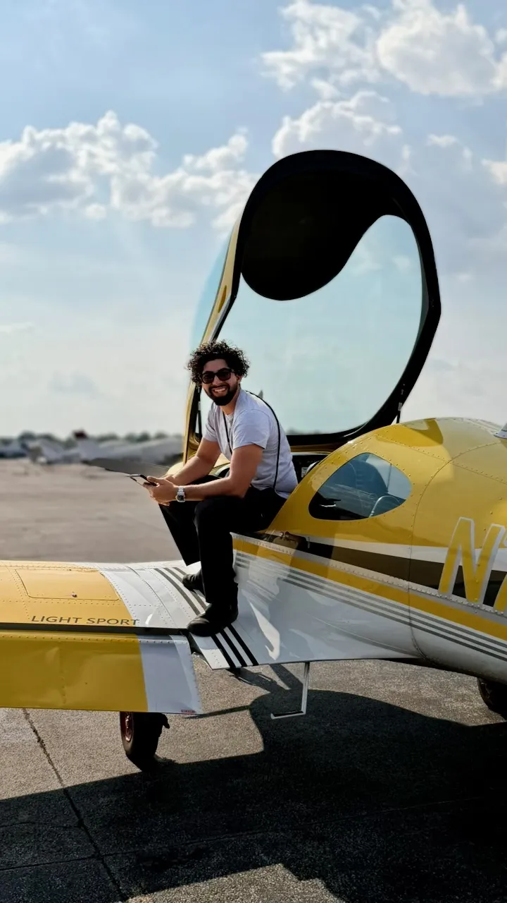

Learn to fly in Louisville.
Every rating starts with a plan.
Discovery flights, ground instruction, and written & oral prep at Bowman Field — built around your schedule.
502-510-0508 — call or text, I answer.

The flight plan

Meet Diego Suarez.
I'm 24 years old, and while flying wasn't always my plan, the aviation bug bit me — and I never looked back. I did my training at the Kentucky Flight Training Center at Bowman Field (KLOU), and I'm grateful for the instructors and mentors who guided me. Now I love sharing what I've learned — helping you build a strong, safe, standards-based foundation.
"Flying is the dream. Understanding it is what makes you confident."
Say hello →- Certificated Flight Instructor
- CFI · ASEL · FAA 14 CFR § 61.183
- Advanced Ground Instructor
- AGI · FAA 14 CFR § 61.215
- Commercial Pilot
- CPL · ASEL · FAA 14 CFR § 61.123
- Instrument Rating
- IR · ASEL · FAA 14 CFR § 61.65
- Private Pilot
- PPL · ASEL · FAA 14 CFR § 61.109
Where are you on the route?
Set your stage and get a curated flight plan of guides for exactly that leg.
The hangar
Free tools — built by your instructor.
The checklist.
Quick answers to the questions new and returning students ask most often.
What does flight training cost?
What happens on a discovery flight?
What medical certificate do I need?
How long does it take to earn a Private Pilot certificate?
Where do lessons take place?
Talk to Diego.
502-510-0508Call or text — I usually reply the same day.
Email Diego or call 502-510-0508.
Ready when you are —
Book a Discovery FlightPrefer email? SuarezCFI@gmail.com